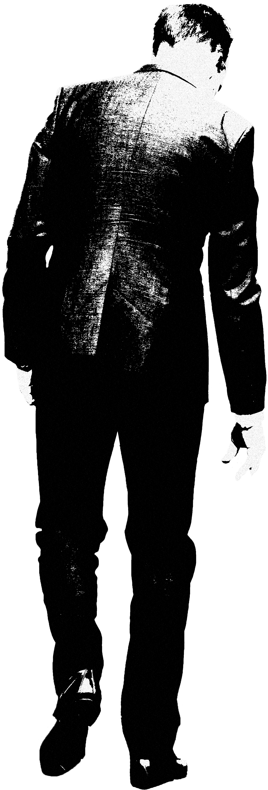

Code★Adam
definition
background
process
in korea
코드 아담(Code Adam)이란?
대규모 점포와 다중이용시설에서 실종 아동을 빠르게 수색할 수 있도록 하는 제도.
실종아동 신고가 접수될 경우 즉시 시설관리주체는 즉시 경보발령을 내린 후 출입구를 감시하며 실종아동의 빠른 발견을 위해 노력해야한다.
*이때 실종아동에는 18세 미만의 아동 뿐만 아닌 지적 또는 자폐적 정신 장애인과 치매환자 또한 해당된다.
